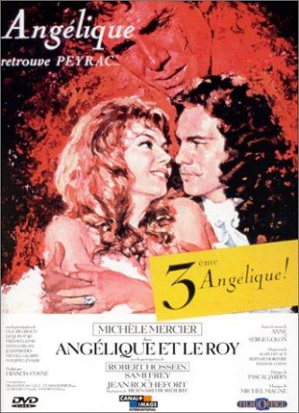

gesehen am 28.01.2018
gesehen am 28.01.2018Alternativ: Angelique and the King (Englischer Titel) gesehen am 28.01.2018
 
 IMDB-Wertung: 6.8 / 10
IMDB-Wertung: 6.8 / 10  Metascore:
Metascore: 
This is the third of the Angélique films. After the loss of her second husband, Angélique goes home to live quietly with her children. However, King Louis XIV has a mission for her involving the Persian ambassador. Later, rumors spread that she has become the new mistress of the king. As Ang��lique navigates politics and matters of the heart, she uncovers a secret....
Jahr: 1966
Dauer: 104 Minuten
FSK: 12
Land: Frankreich Studio: GloriaTonspuren:
Untertitel:
Auflösung: 1080p (1920x816) Größe: 6789 MB
Genre: Abenteuer, Liebe, Geschichte
Regisseur: Bernard Borderie
Drehbuch: Hasraf Dulull
Soundtrack: Michel Magne
Darsteller:
 Robert Hossein als Jeoffrey de Peyrac
Robert Hossein als Jeoffrey de Peyrac Jean Rochefort als Desgrez
Jean Rochefort als Desgrez Michel Galabru als Bontemps
Michel Galabru als Bontemps Philippe Lemaire als de Vardes
Philippe Lemaire als de VardesDatei: X:\6-Hexalogie(A-Z)\Angelique\Angélique 3 und der König (1966, FSK12, 1920x816).mkv seit 09.01.2018
Festplatte: HD Collection-3(N-Z)-6(A-Z)
 Es gibt insgesamt 9 Filme in der Gruppe '6-Hexalogie(A-Z)\Angelique'
Es gibt insgesamt 9 Filme in der Gruppe '6-Hexalogie(A-Z)\Angelique'